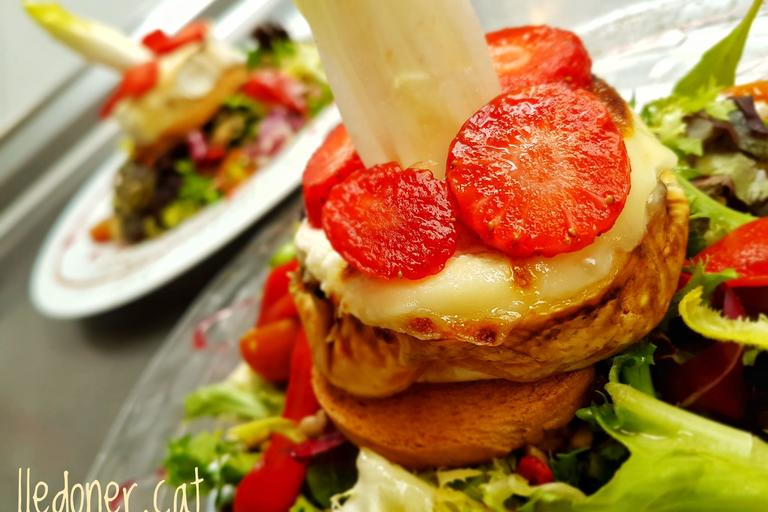

Servei · Vallirana
Restaurant El Lledoner, desde 1982, ubicat en plena natura a les afores de Vallirana aprop de l'Ordal, on gaudir de tranquilitat i bon ambient. Oferim tota mena de serveis com menjar a la Carta,…